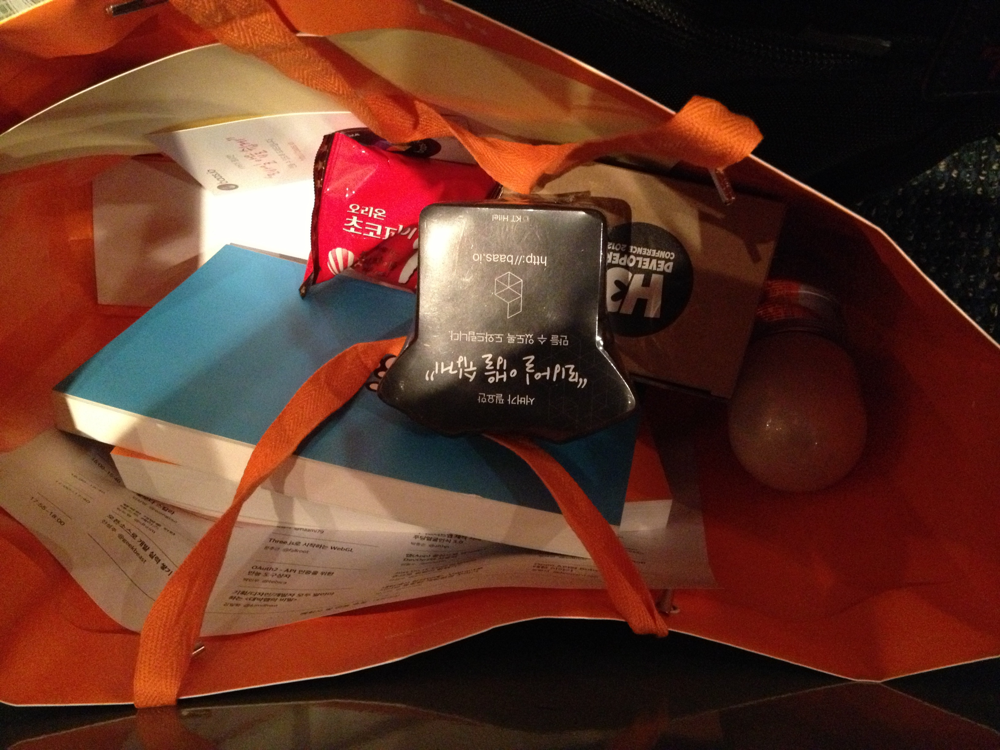
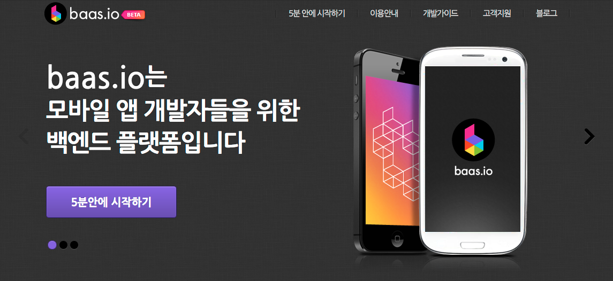
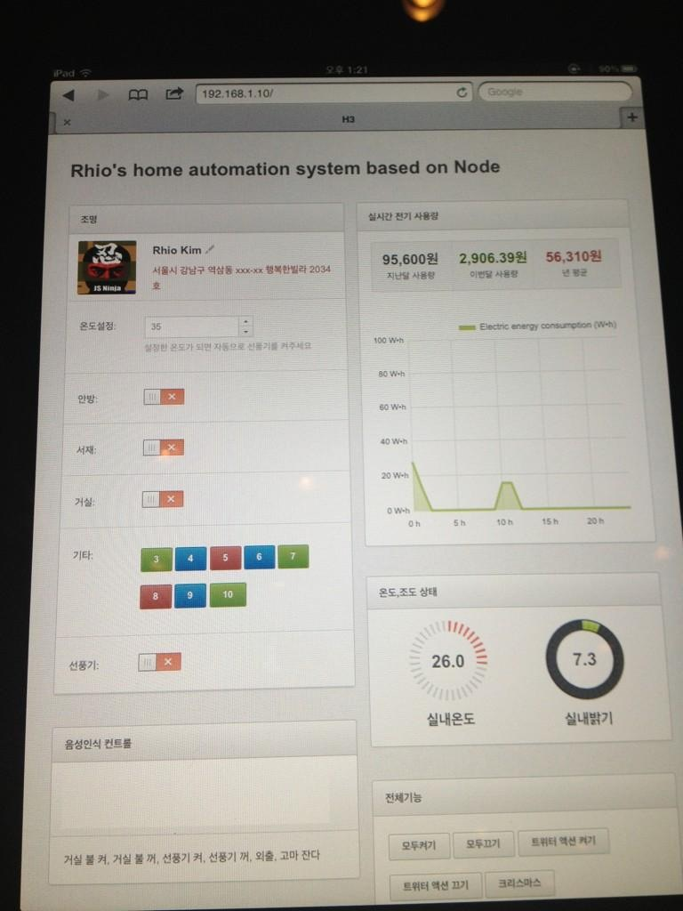

taehoonjung
blog: http://thlife.net
twitter: @dennis_jung
github: dennis-jung
iPhone, Android Developer.
다른 회사 컨퍼런스를 꽤 오랫만에 다녀왔습니다. 혼자가게 되어서 어쩔수 없이(?) 집중할 수 밖에 없는 환경 ㅎㅎ
하지만, 나름 느낀것도 배운것도 많이 있었습니다. (몇개 섹션은 정말 … ㅠ_ㅠ)
등록 후에 주는 선물이 푸짐해서 좋았습니다. ㅎㅎ

섹션소개는 링크를 따라가시면 있습니다. ^
제가 선택한 섹션 어떠신가요? 나름 긱하게 잘 선택했다고 생각하는데 ㅋ
위 세션을 들으면서 실망도 많이 했는데,
위 3개의 섹션이 없었다면, 컨퍼런스에 온걸 후회했을지 모릅니다.
하지만, 위 섹션들은 제게 많은 호기심과 도전의식을 갖게 해주었고, 그 결과중 하나가 바로 블로그 이전입니다. ^
각 섹션을 살펴보겠습니다.
이번 컨퍼런스에서 KTH는 bass.io라는 모바일 플랫폼을 강하게 홍보했습니다. 키노트가 bass.io 소개였으니 말이죠…
클라우드 시대에 오면서 SAAS, PAAS 이런 말들 많이 들어 보셨죠? bass.io 도 같은 맥락으로 Backend as a Service라고 하네요.
개인 또는 소규모 모바일 개발자들이 가장 걱정하는게 뭘까요?
바로 서버 구축입니다. Stand-alone하지 않은 앱들은 서버와의 통신이 필요한데, 서버를 구축하는게 쉬운일은 아니죠.
키노트에서 이런 이야길 하시더군요. 소규모 또는 개인이 만든 모바일앱이 갑자기 뜨면(이슈화 되면), 망한다.
서버에 문제가 생기면서 제대로 된 서비스를 하지 못한다. 그래서 결국 서비스가 망하게 된다…
조금 극단적인 예긴 하지만, 무엇을 이야기하고자 하는지는 충분히 알 수 있었습니다.
"모바일 앱에서 필요한 간단한 서버를 플랫폼화하여 서비스 하겠다."인데, 나름 괜찮을 것 같다는 생각을 했습니다.

REST API를 제공하며, Schema생성 및 관리 등이 상당히 쉽게 되어 있었습니다.
위의 모든것들은 bass.io 포탈이라는 곳에서 제공했습니다.
게다가 고객센터나, PUSH, 앱 스토어에 대한 통계도 제공해주더군요.
이제 시작하는 서비스라 두고봐야겠지만, 개인또는 소규모 업체에게는 좋을 것 같았습니다.
섹션이 13:00 부터 시작이라, 좀 졸립지 않을까? 걱정했는데, 기대와 달리 정말 눈이 반짝반짝 빛났습니다. ㅎㅎ 총 3가지를 이야기했는데,
이중 하루프레스와 아두이노는 정말 재밌었습니다. ㅎㅎ
먼저 하루프레스부터 살펴보면, GitHub의 Page 서비스 | 번역를 이용하여, 정적 페이지를 생성해주는 플랫폼입니다.
GitHub에서 사용자 페이지를 지원해주는건 이번에 알게 되었습니다.
사용자 페이지를 이용하면, 호스팅을 하지않고, 홈페이지 구축이 가능하고, 도메인 연결도 가능하니, 일반인은 어렵겠지만, 개발자라면, 충분히 괜찮은 선택이 될 것 같습니다.
GitHub의 페이지 서비스는 따로 포스팅해야 할 것 같습니다.
다시 돌아와, 하루프레스는 개발자스럽게(?), 빠르게, 블로그 포스팅이 가능하다는게 장점입니다.
스크립트를 통해 포스팅을 작성하고, 서버에 배포 하는 방식입니다.
단점으로는 GUI가 지원되지 않고, GitHub(git), nodejs, javascript에 대한 지식이 조금 있어야합니다.
MarkDown, DropBox 지원, 웹 프리젠테이션도 가능하네요.
지금 보고 계신 포스팅도 하루프레스로 작성되었습니다.
서비스 초기라서 메뉴얼이나 이런것들이 많이 정리되어 있지 않고, 메뉴얼에 나온 정보들이 최신 버전이 아닌것도 보였습니다. 그래서 전 많은 삽질을… ㅎㅎ
설치형 블로그를 원하신다면, 그리고 개발자스러운 블로그를 원한다면, 나쁘지 않은 괜찮은 선택이 될수 있을 것 같습니다. (KTH에서도 꽤 밀고 있는 걸로 봐서, 업데이트도 잘 되지 않을까욤? ㅎㅎ)
최근 느끼는 불편함은… 이동중에 포스팅을 하기가 어렵네요… 다른 PC라면 드랍박스를 이용하면 될 것 같은데, 방법이 없으려나~ 음
H3 Conference 2012 하루프레스 소개 영상 from rhiokim on Vimeo.
##### * 아두이노를 이용한 홈 자동화 시스템 아두이노라고 들어보셨나요? 전 이번에 처음 들어봤는데요. 일전에 팀의 박모 대리님이 안드로이드 얼굴 인식 카메라 만든 것 같이 하드웨어(센서)와 소프트웨어를 연동하는 것이였는데, 엄청 신기했습니다. ㅎㅎ 아두이노(Arduino)는 오픈소스를 기반으로 한 피지컬 컴퓨팅 플랫폼으로, AVR을 기반으로 한 보드와 소프트웨어 개발을 위한 통합 환경(IDE)를 제공한다. 아두이노는 많은 스위치나 센서로부터 값을 받아들여, LED나 모터와 같은 것들을 통제함으로써 환경과 상호작용이 가능한 물건을 만들어낼 수 있다. 또한 플래시, 프로세싱, Max/MSP와 같은 소프트웨어를 연동할 수 있다. [출처:위키](http://ko.wikipedia.org/wiki/%EC%95%84%EB%91%90%EC%9D%B4%EB%85%B8) 섹션에 시연을 보여주셨는데, Nodejs를 통해 웹으로 실내등, 온도, 조도, 등을 제어 했습니다.  재밌더라구요… 시연 준비 하시느라 돈도 꽤 많이 들었다며, 좀더 쉽게 할 수 있는 BeagleBon이나 Rasberry PI를 이용할 수 있다는데, 모두 linux와 nodejs가 설치되어 있으며, 가격도 더 저렴하다고 한다. 개인적으로 알아보니, [Rasberry PI](http://www.raspberrypi.org/)의 경우, 영국에서 만든 제품인데, An ARM GNU/Linux box for $25. Take a byte!라고 홈페이지에 소개 되어 있지만, 싸게 팔지 않습니다… 우리나라에서도 팔긴하는데, (직배인듯 합니다.) 5만원 정도네요… 이것저것 만지는거 좋아하시는 분들이라면, Arduino가 괜찮을 것 같습니다. ㅎㅎ ### 3. 스마트모바일 환경에서의 App.품질관리전략 사실, 3번 섹션에 대해 정말 큰 기대를 갖고 있었는데요. 실망하기 그지 없었습니다… 요즘 관심 갖고 있는 모바일 자동화 테스트에 대해 어떤 이야길 해주려나~~ 하는 생각에 갔었는데, 발표자는 "모바일 자동화 테스트를 하기 위해서는 스크립트를 작성해야하는데, 스크립트 하나 작성하는데 숙련자의 경우 15분이 소요된다. 그래서 우리는 포기했다. 손으로 한다…" 이런 이야길 하시더군요. 아… 운좋게도 맨 앞자리에 앉아 있었는데… 게다가 내용은 JIRA 이야기가 대부분 이였습니다. 뭐라라까요… 품질관리 전략을 위해서는 애자일스럽게 일해라… 이게 결론으로 느껴졌습니다. ㅠ_ㅠ ## 4. 꽃보다 스칼라 - 김상범 스칼라라고 들어보셨나요? 요즘 뜨고 있는 언어라는데요. 위키백과에서 찾아본 스칼라의 정의는 다음과 같습니다. 스칼라(Scala)는 객체 지향 프로그래밍 언어와 함수형 프로그래밍의 요소가 결합된 다중패러다임 프로그래밍 언어이다. 스칼라의 이름은 [출처: http://stan4j.com/](http://stan4j.com/)
- [Debug Visualisation](http://marketplace.eclipse.org/content/debug-visualisation-eclipse#.UJm0COOTt9Q)
- 디버그 모드에서 변수들에 대한 구조를 조금도 시각화 하여 보여줍니다.

[출처: http://code.google.com/a/eclipselabs.org/p/debugvisualisation/?redir=1](http://code.google.com/a/eclipselabs.org/p/debugvisualisation/?redir=1)
오픈소스 분석은 자신의 개발스킬을 한단계 업그레이드 할수있습니다. 저도 공감하구요.
오늘부터 도전해보시겠어요? .^
개인적으로는 자극이 되었던 컨퍼런스였습니다. 조금 풀어진 마음을 다시 잡을 수 있었고, 앞으로 나아가야 할 방향에 대해서도 고민을 할 수 있었던 시간이였던 것 같습니다.
H3 컨퍼런스에서 가장 좋았던 것은, 컨퍼런스의 내용이 담긴 책을 준다는 것이였습니다. 책에는 섹션의 발표자료가 아닌 섹션에서 말하고자 하는 것을 풀어서 설명해 놓았고, 추가적인 내용도 있어서 이해에 도움이 많이 되었습니다.
** 다운로드
이제, 저는 아두이노에 관심있는 분들 모아서 스터디 함 해봐야겠습니다. ㅎㅎ